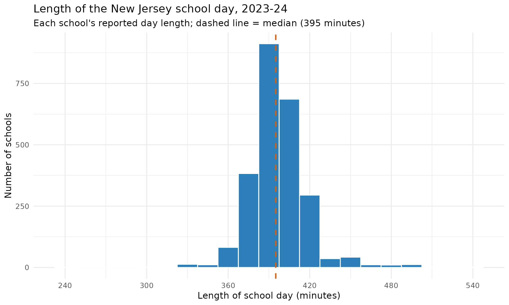
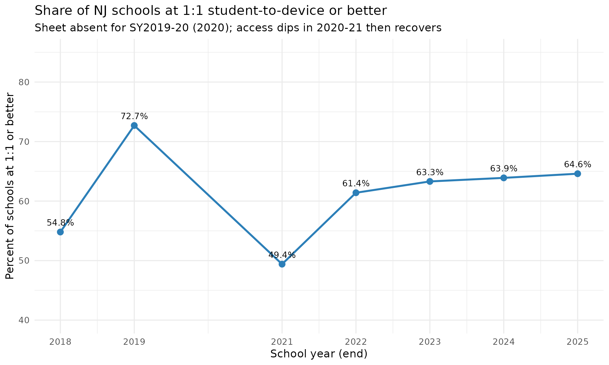

School Environment: Instructional Time & Device Access
Source:vignettes/nj-school-environment.Rmd
nj-school-environment.RmdTwo levers a building leader directly controls - how much
time students spend in school and whether every student
has a device - are reported school-by-school in the NJ School
Performance Reports but are rarely surfaced in a comparable way.
fetch_school_day() and fetch_device_ratios()
expose them. Both are school-level sheets (an attribute of a building,
with no district/state aggregate), so every example below filters to
is_school.
How long is the New Jersey school day?
fetch_school_day() returns the published
length_of_day string (e.g. "6 Hrs. 25 Mins.")
alongside a derived numeric length_of_day_minutes. The
typical NJ school day in 2023-24 runs about six and a half hours, but
the spread is wide - from half-day programs near four hours to schools
topping nine.
sd24 <- fetch_school_day(2024) %>%
filter(is_school, !is.na(length_of_day_minutes))
# Print-before-plot: confirm the data feeding the chart.
nrow(sd24)
#> [1] 2503
summary(sd24$length_of_day_minutes)
#> Min. 1st Qu. Median Mean 3rd Qu. Max.
#> 240.0 385.0 395.0 396.8 405.0 545.0
ggplot(sd24, aes(x = length_of_day_minutes)) +
geom_histogram(binwidth = 15, fill = "#2c7fb8", colour = "white") +
geom_vline(xintercept = median(sd24$length_of_day_minutes),
linetype = "dashed", colour = "#d95f0e", linewidth = 0.9) +
scale_x_continuous(breaks = seq(240, 600, 60)) +
labs(
title = "Length of the New Jersey school day, 2023-24",
subtitle = paste0("Each school's reported day length; dashed line = median (",
median(sd24$length_of_day_minutes), " minutes)"),
x = "Length of school day (minutes)",
y = "Number of schools"
) +
theme_minimal(base_size = 13)
The longest and shortest reported days:
sd24 %>%
arrange(desc(length_of_day_minutes)) %>%
slice(c(1:3, (n() - 2):n())) %>%
select(district_name, school_name, length_of_day, length_of_day_minutes)
#> # A tibble: 6 × 4
#> district_name school_name length_of_day length_of_day_minutes
#> <chr> <chr> <chr> <dbl>
#> 1 KIPP: Cooper Norcross, A New … KIPP: Coop… 9 Hrs. 5 Min… 545
#> 2 TEAM Academy Charter School TEAM Acade… 9 Hrs. 0 Min… 540
#> 3 Northfield City School Distri… Northfield… 8 Hrs. 50 Mi… 530
#> 4 Matawan-Aberdeen Regional Sch… Strathmore… 5 Hrs. 15 Mi… 315
#> 5 Pennsauken Township Board of … A.E. Burli… 5 Hrs. 0 Min… 300
#> 6 Bayonne School District Bayonne Al… 4 Hrs. 0 Min… 240Device scarcity peaked in the first pandemic year
fetch_device_ratios() reports the
student-to-computing-device ratio per school
(students_per_device; a value of 1 means 1:1). Tracking the
share of schools at 1:1-or-better across the years the sheet exists (it
is absent for SY2016-17 and SY2019-20) shows that access was actually
tightest in 2020-21, the first full remote-learning
year, before recovering - not the steady march to 1:1 one might
expect.
device_years <- c(2018, 2019, 2021, 2022, 2023, 2024, 2025)
device_trend <- purrr::map_dfr(device_years, function(yr) {
fetch_device_ratios(yr) %>%
filter(is_school, !is.na(students_per_device)) %>%
summarise(
end_year = yr,
n_schools = n(),
pct_1to1 = round(100 * mean(students_per_device <= 1), 1),
median_ratio = median(students_per_device)
)
})
# Print-before-plot.
device_trend
#> # A tibble: 7 × 4
#> end_year n_schools pct_1to1 median_ratio
#> <dbl> <int> <dbl> <dbl>
#> 1 2018 2095 54.8 1
#> 2 2019 2148 72.7 1
#> 3 2021 2147 49.4 1.1
#> 4 2022 2138 61.4 1
#> 5 2023 2260 63.3 1
#> 6 2024 2270 63.9 1
#> 7 2025 2257 64.6 1
ggplot(device_trend, aes(x = end_year, y = pct_1to1)) +
geom_line(colour = "#2c7fb8", linewidth = 1.1) +
geom_point(size = 3, colour = "#2c7fb8") +
geom_text(aes(label = paste0(pct_1to1, "%")), vjust = -1, size = 3.6) +
scale_x_continuous(breaks = device_years) +
scale_y_continuous(limits = c(40, 85)) +
labs(
title = "Share of NJ schools at 1:1 student-to-device or better",
subtitle = "Sheet absent for SY2019-20 (2020); access dips in 2020-21 then recovers",
x = "School year (end)",
y = "Percent of schools at 1:1 or better"
) +
theme_minimal(base_size = 13)
Notes
- Both fetchers are school-level only. The
SchoolDaysheet covers 2017-2025 (the 2017 sheet omits entity names; CDS ids are present). TheDeviceRatiossheet covers 2018-2025 except SY2016-17 and SY2019-20. - Durations and ratios are published as strings; the numeric
*_minutesandstudents_per_devicecolumns are a deterministic re-expression of the published value. Non-values ("n/a","No devices reported") becomeNA, never a fabricated number.
sessionInfo()
#> R version 4.6.1 (2026-06-24)
#> Platform: x86_64-pc-linux-gnu
#> Running under: Ubuntu 24.04.4 LTS
#>
#> Matrix products: default
#> BLAS: /usr/lib/x86_64-linux-gnu/openblas-pthread/libblas.so.3
#> LAPACK: /usr/lib/x86_64-linux-gnu/openblas-pthread/libopenblasp-r0.3.26.so; LAPACK version 3.12.0
#>
#> locale:
#> [1] LC_CTYPE=C.UTF-8 LC_NUMERIC=C LC_TIME=C.UTF-8
#> [4] LC_COLLATE=C.UTF-8 LC_MONETARY=C.UTF-8 LC_MESSAGES=C.UTF-8
#> [7] LC_PAPER=C.UTF-8 LC_NAME=C LC_ADDRESS=C
#> [10] LC_TELEPHONE=C LC_MEASUREMENT=C.UTF-8 LC_IDENTIFICATION=C
#>
#> time zone: UTC
#> tzcode source: system (glibc)
#>
#> attached base packages:
#> [1] stats graphics grDevices utils datasets methods base
#>
#> other attached packages:
#> [1] ggplot2_4.0.3 dplyr_1.2.1 njschooldata_0.9.24
#>
#> loaded via a namespace (and not attached):
#> [1] utf8_1.2.6 sass_0.4.10 generics_0.1.4 tidyr_1.3.2
#> [5] stringi_1.8.7 hms_1.1.4 digest_0.6.39 magrittr_2.0.5
#> [9] evaluate_1.0.5 grid_4.6.1 timechange_0.4.0 RColorBrewer_1.1-3
#> [13] fastmap_1.2.0 cellranger_1.1.0 jsonlite_2.0.0 purrr_1.2.2
#> [17] scales_1.4.0 textshaping_1.0.5 jquerylib_0.1.4 cli_3.6.6
#> [21] rlang_1.2.0 withr_3.0.3 cachem_1.1.0 yaml_2.3.12
#> [25] otel_0.2.0 downloader_0.4.1 tools_4.6.1 tzdb_0.5.0
#> [29] vctrs_0.7.3 R6_2.6.1 lifecycle_1.0.5 lubridate_1.9.5
#> [33] snakecase_0.11.1 stringr_1.6.0 fs_2.1.0 ragg_1.5.2
#> [37] janitor_2.2.1 pkgconfig_2.0.3 desc_1.4.3 pkgdown_2.2.0
#> [41] pillar_1.11.1 bslib_0.11.0 gtable_0.3.6 glue_1.8.1
#> [45] systemfonts_1.3.2 xfun_0.59 tibble_3.3.1 tidyselect_1.2.1
#> [49] knitr_1.51 farver_2.1.2 htmltools_0.5.9 labeling_0.4.3
#> [53] rmarkdown_2.31 readr_2.2.0 compiler_4.6.1 S7_0.2.2
#> [57] readxl_1.5.0